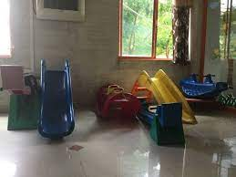
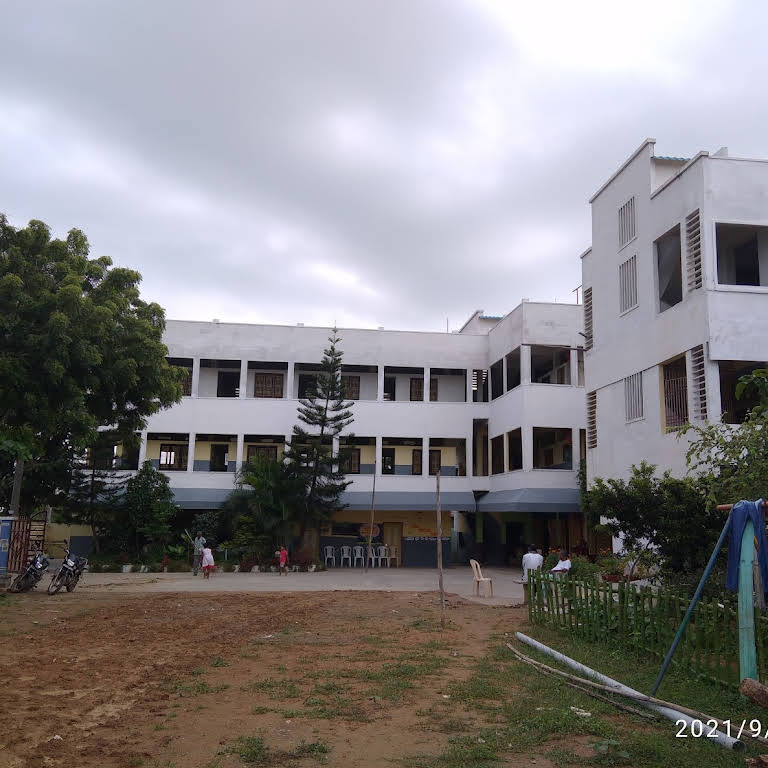

Daniel memorial E.M.High school has a spacious playground that is large enough to play all kinds of games and sports according to the interest of the student.Here,variety of sports equipment is being provided to students.This is because playing sports maintains one's physical health and also makes a student to stay active and sharp i.e helps in maintaining good mental health too.
 